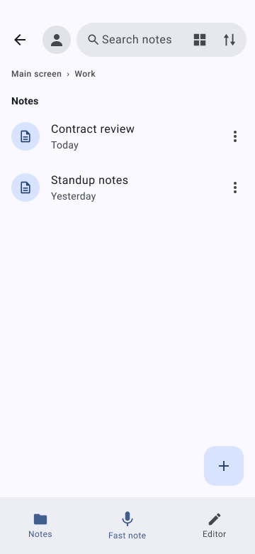
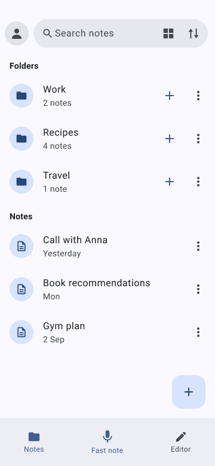
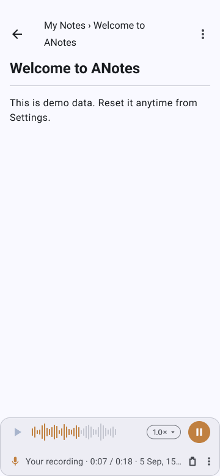
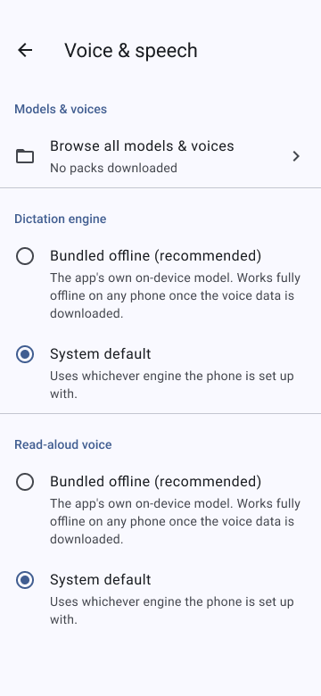

01
You talk faster than you type.Dictate a note and get text back, with nothing sent off the phone to produce it.
A notebook that listens, and reads aloud. Speech-to-text, text-to-speech, storage and search — all running on the phone in your hand.


ANotes is a notes app for Android. You type a note or dictate it, and you can work on it with any local AI model on your phone — offline, privately, with no network needed.
Speech recognition, speech synthesis, storage and search all run on the phone's own processor. No account, no server, no analytics. The only thing that ever needs a connection is downloading a voice model, once.
Every note is a plain Markdown file with YAML front matter, sitting next to a SQLite index. The files are the source of truth — if the index is ever wrong, the app rebuilds it from them.
ANotes stands for "Local Notebook with AI." The AI features aren't built yet. What exists today is the recording, the transcript, the read-aloud, and the folder it's filed in.
Dictate a note and get text back, with nothing sent off the phone to produce it.
Every note is a plain Markdown file on your own storage — open it in any text editor, with the app closed for good, if you ever want that.
There's no account, no cloud sync, no analytics — and no AI at all yet, stated up front rather than found out later.
The original recording is kept next to the transcript, so you can play back what you actually said.
One tap on the home-screen widget and it starts recording in a second or two — no screen to open, and never a voice model to wait for.
hand you an audio file and stop there.
transcribes it into a searchable, organized note — and keeps the audio too.
process your voice on a server somewhere.
never lets what you say or write leave the phone.
store your writing in their own locked format.
writes plain Markdown — readable with the app uninstalled.
Create, edit, nest and move. Reorder by dragging.
Tap the disc to select, hold anything to drag. Batch move and delete.
Delete is never immediately permanent. Deleting a folder asks what happens to what's inside it.
Titles, note content, and folder names — one search box, on-device.
On-device, offline. Text appears when you stop talking, not while you talk.
On-device text-to-speech. Select a sentence and "Read aloud" is right there in Android's own menu.
A dictated note holds the real audio. One player switches between your voice and the synthetic one.
Nothing ships pre-installed. Preview, download and verify a language pack in-app.
Real measured usage, plus audio retention from 7 days to never. Default is never.
A home-screen widget. Tap it and recording starts in a second or two — no screen to open, no model to load first.
Real frames from the current build, not renders.


Summarising a note, drafting a to-do list from it, setting a reminder — a local AI engine working over your notes, running on the phone like everything else. It's not in the app yet — the target is a few weeks out — and the ground rules are already decided.
If an optional cloud model is ever offered, it will be opt-in, it will name exactly what's about to be sent before sending it, and it will never send your voice recordings.
Optional cloud backup is planned too — no date yet. Notes would be encrypted with a passphrase only you hold before they ever leave the phone, so the storage provider can't read them, and neither can anyone without that passphrase.
Notes never leave the phone because nothing in the app has a way to send them anywhere — no network code on that path, no account to sync to. There's no encryption claim here: your notes rely on your Android device's own security, the same as any other app-private storage. No account profiles, no usage-tracking SDKs.
ANotes is alpha software, built and used daily on one Android phone. There's no store listing or signup yet — when it's ready to share more broadly, this page will say so.
No download link exists because there is nothing to hand you yet — that's the honest version.
Source-available, not open source. Free for personal use, study, research, hobby projects, and for charities, schools, universities and public-research bodies. Selling it, or using it inside a commercial product, needs written permission.